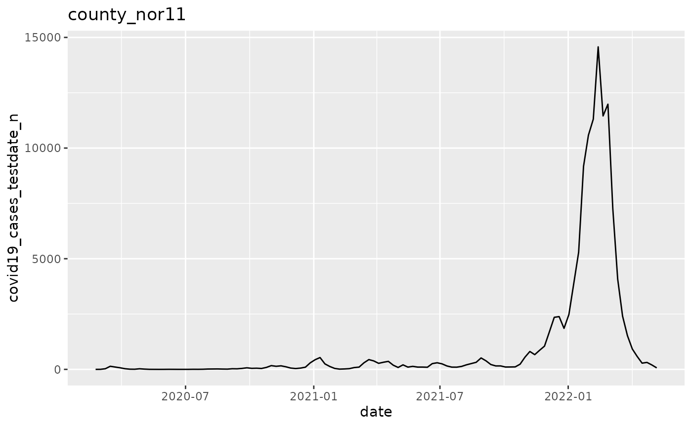
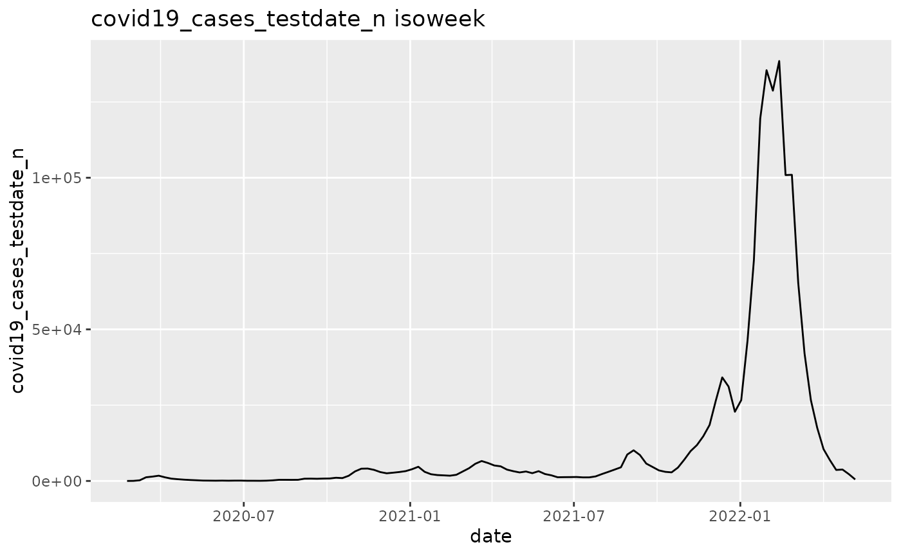
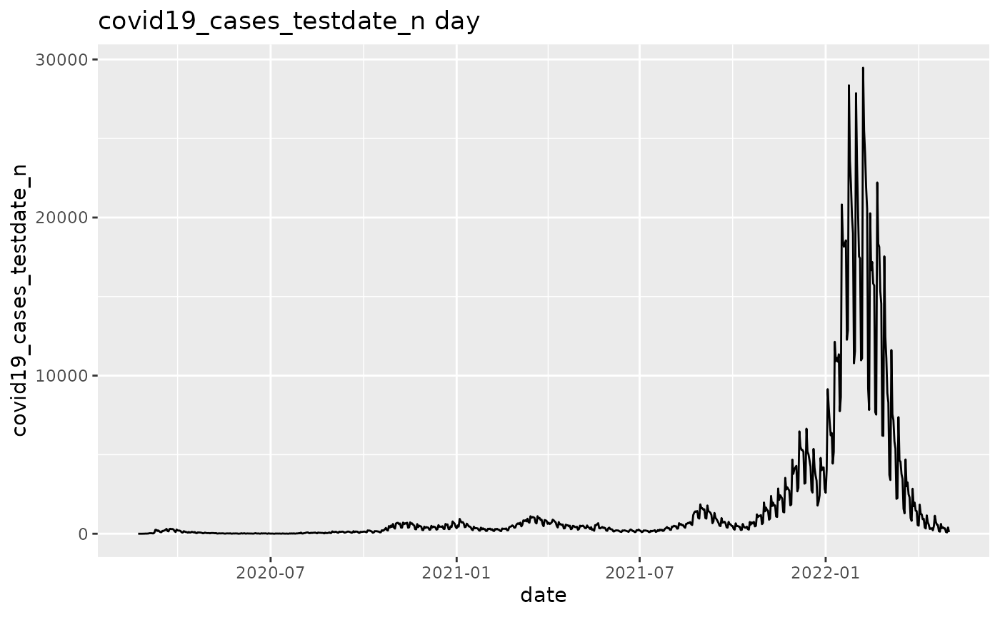
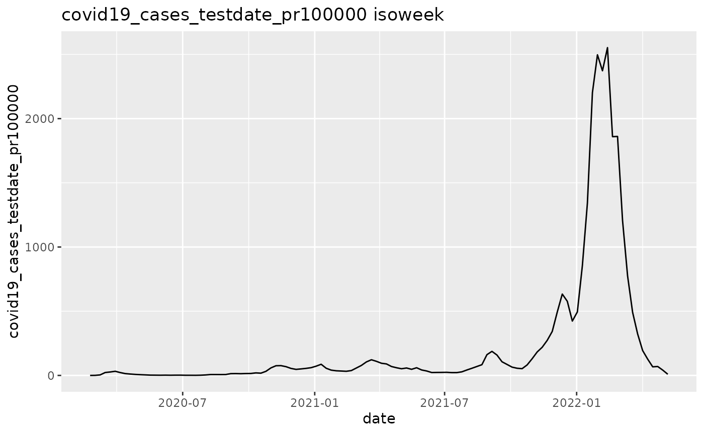
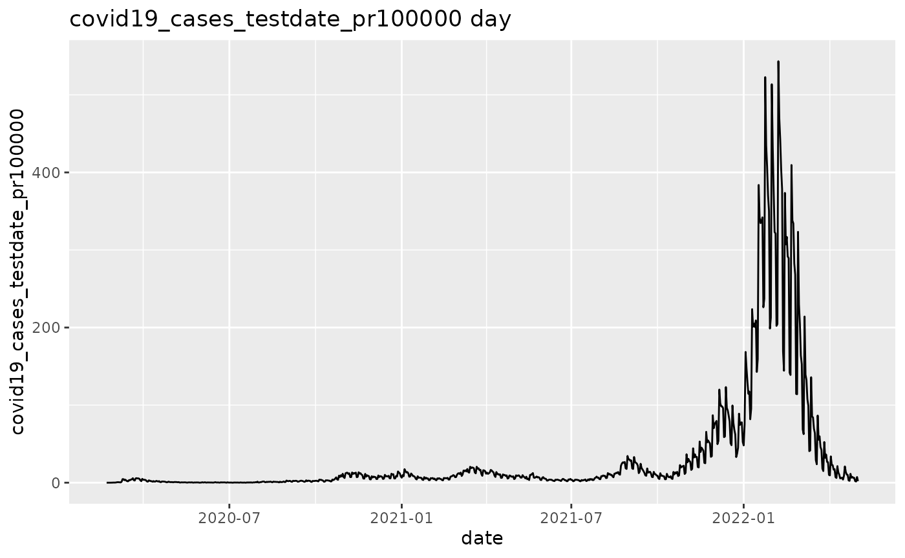
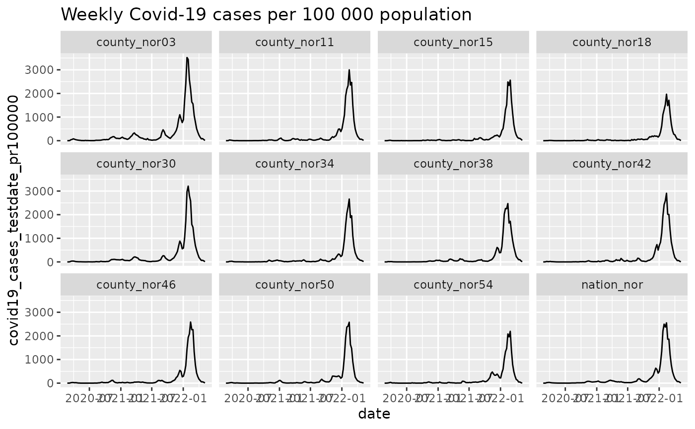
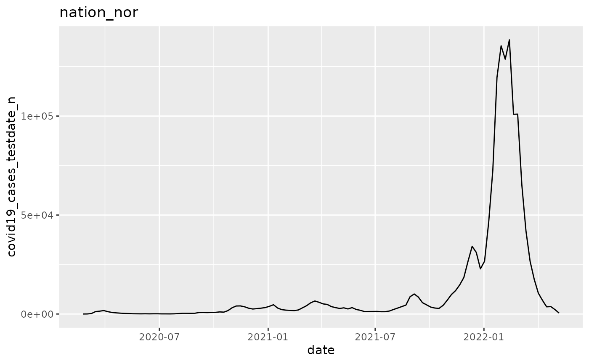
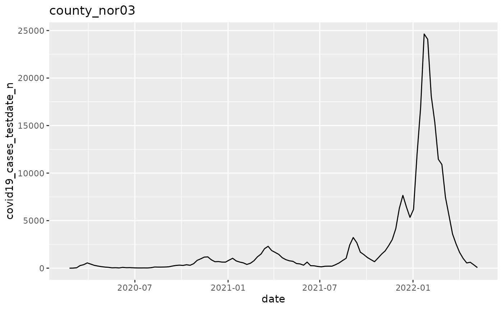

This vignette builds three plans on
nor_covid19_cases_by_time_location, a dataset of Covid-19
cases in Norway. vignette("plnr") defines the terms:
argset, action function, analysis and plan.
Single-function plan
A single-function plan applies one action function to many argsets.
Add the argsets first. Then give every argset the same action function
with apply_action_fn_to_all_argsets().
Many strata
This plan draws one graph for each location.
##
## Attaching package: 'data.table'## The following object is masked from 'package:base':
##
## %notin%
p <- plnr::Plan$new()
data_fn <- function() {
return(plnr::nor_covid19_cases_by_time_location)
}
p$add_data(name = "covid19_cases", fn_name = "data_fn")
location_codes <- unique(p$get_data()$covid19_cases$location_code)
location_codes## [1] "county_nor03" "county_nor11" "county_nor15" "county_nor18" "county_nor30"
## [6] "county_nor34" "county_nor38" "county_nor42" "county_nor46" "county_nor50"
## [11] "county_nor54" "nation_nor"
p$add_argset_from_list(
plnr::expand_list(
location_code = location_codes,
granularity_time = "isoweek"
)
)
p$get_argsets_as_dt()## name_analysis index_analysis location_code
## <char> <int> <list>
## 1: df0234c6-126e-4792-bdd2-2707d7c4c675 1 county_nor03
## 2: 444ae03f-962b-4165-a499-992f10f6c969 2 county_nor11
## 3: b104bc16-4f7f-4458-a246-f684756be227 3 county_nor15
## 4: e333268a-5898-4b54-bb6e-100940cb9de2 4 county_nor18
## 5: 2bac9b0b-9f10-49a3-b8c3-c1d568762027 5 county_nor30
## 6: 8c6cd191-fbee-45ee-aae8-2270169e8a6a 6 county_nor34
## 7: 8a64df0b-041e-4ec3-83c9-c6f37e014d69 7 county_nor38
## 8: 407d805e-d6cc-4df8-86b1-b59493c5f1c3 8 county_nor42
## 9: a9a82506-f586-4ae4-8822-0eaa49d5ca62 9 county_nor46
## 10: 109d4594-6a30-4194-b806-4c28968a6241 10 county_nor50
## 11: de0d74dd-9959-4e5d-92f8-7479d749392b 11 county_nor54
## 12: ab3a51a0-82a2-40bb-9a54-24542a8d3680 12 nation_nor
## granularity_time
## <list>
## 1: isoweek
## 2: isoweek
## 3: isoweek
## 4: isoweek
## 5: isoweek
## 6: isoweek
## 7: isoweek
## 8: isoweek
## 9: isoweek
## 10: isoweek
## 11: isoweek
## 12: isoweek
action_fn <- function(data, argset) {
if (plnr::is_run_directly()) {
data <- p$get_data()
argset <- p$get_argset(1)
}
pd <- data$covid19_cases[
location_code == argset$location_code &
granularity_time == argset$granularity_time
]
q <- ggplot(pd, aes(x = date, y = covid19_cases_testdate_n))
q <- q + geom_line()
q <- q + labs(title = argset$location_code)
q
}
p$apply_action_fn_to_all_argsets(fn_name = "action_fn")
q <- p$run_all()
q[[1]]
q[[2]]
Many variables
This plan crosses two choices: cases or cases per 100 000 population, and weekly or daily data. It draws one graph for each of the four combinations.
p <- plnr::Plan$new()
data_fn <- function() {
return(plnr::nor_covid19_cases_by_time_location[location_code == "nation_nor"])
}
p$add_data(name = "covid19_cases", fn_name = "data_fn")
p$add_argset_from_list(
plnr::expand_list(
variable = c("covid19_cases_testdate_n", "covid19_cases_testdate_pr100000"),
granularity_time = c("isoweek", "day")
)
)
p$get_argsets_as_dt()## name_analysis index_analysis
## <char> <int>
## 1: 7d09b0a8-ff34-4af5-b276-faa9b8af67e5 1
## 2: a01a30ab-fad8-40d5-92a8-49c9384db955 2
## 3: 5c562b55-4fcc-44b4-a9f1-db60d2fa0064 3
## 4: edf6bc10-d42f-43ec-a800-836ba31f3e44 4
## variable granularity_time
## <list> <list>
## 1: covid19_cases_testdate_n isoweek
## 2: covid19_cases_testdate_n day
## 3: covid19_cases_testdate_pr100000 isoweek
## 4: covid19_cases_testdate_pr100000 day
action_fn <- function(data, argset) {
if (plnr::is_run_directly()) {
data <- p$get_data()
argset <- p$get_argset(1)
}
pd <- data$covid19_cases[granularity_time == argset$granularity_time]
q <- ggplot(pd, aes(x = date, y = .data[[argset$variable]]))
q <- q + geom_line()
q <- q + labs(title = paste(argset$variable, argset$granularity_time))
q
}
p$apply_action_fn_to_all_argsets(fn_name = "action_fn")
p$run_one(1)
p$run_one(2)
p$run_one(3)
p$run_one(4)
Multi-function plan
A multi-function plan gives each analysis its own action function. This plan makes the figures of a short report. Figure 1 has its own action function, and figures 2 and 3 share one.
p <- plnr::Plan$new()
data_fn <- function() {
return(plnr::nor_covid19_cases_by_time_location)
}
p$add_data(name = "covid19_cases", fn_name = "data_fn")
figure_1 <- function(data, argset) {
if (plnr::is_run_directly()) {
data <- p$get_data()
argset <- p$get_argset("figure_1")
}
pd <- data$covid19_cases[granularity_time == "isoweek"]
q <- ggplot(pd, aes(x = date, y = covid19_cases_testdate_pr100000))
q <- q + geom_line()
q <- q + facet_wrap(~location_code)
q <- q + labs(title = "Weekly Covid-19 cases per 100 000 population")
q
}
plot_epicurve_by_location <- function(data, argset) {
if (plnr::is_run_directly()) {
data <- p$get_data()
argset <- p$get_argset("figure_2")
}
pd <- data$covid19_cases[
granularity_time == "isoweek" &
location_code == argset$location_code
]
q <- ggplot(pd, aes(x = date, y = covid19_cases_testdate_n))
q <- q + geom_line()
q <- q + labs(title = argset$location_code)
q
}
p$add_analysis(name = "figure_1", fn_name = "figure_1")
p$add_analysis(
name = "figure_2",
fn_name = "plot_epicurve_by_location",
location_code = "nation_nor"
)
p$add_analysis(
name = "figure_3",
fn_name = "plot_epicurve_by_location",
location_code = "county_nor03"
)
p$run_one("figure_1")
p$run_one("figure_2")
p$run_one("figure_3")